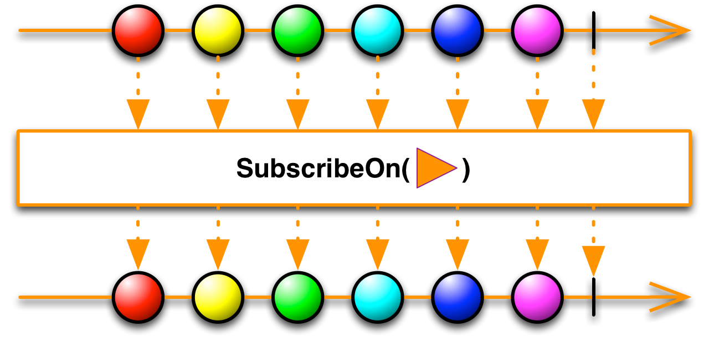

指定Observable自身在哪个调度器上执行

很多ReactiveX实现都使用调度器 "Scheduler"来管理多线程环境中Observable的转场。你可以使用SubscribeOn操作符指定Observable在一个特定的调度器上运转。
Scheduler
SubscribeOn
ObserveOn操作符的作用类似，但是功能很有限，它指示Observable在一个指定的调度器上给观察者发通知。
ObserveOn
在某些实现中还有一个UnsubscribeOn操作符。
UnsubscribeOn